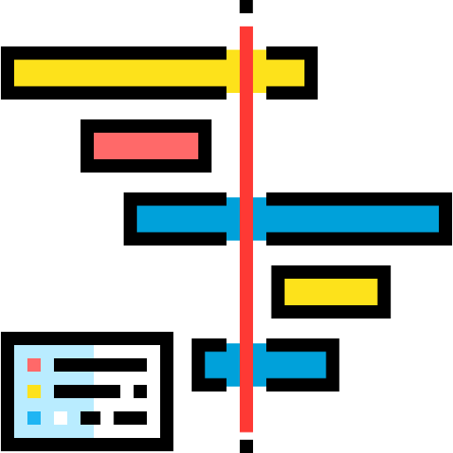

News
Recent updates in my professional life.
Join SMU
I'll join School of Information Systems, Singapore Management University as Associate Professor since Oct 1, 2020.
Paper accepted in ICWSM'21
Our paper on news-to-tweet is accepted in ICWSM'21
Paper presented in WebSci'20
Our paper on media framing is presented in WebSci'20.
7,500+/14,000+ Citations
Our "What is Twitter, a social network or a news media? (WWW'10)" has been cited > 7,500+ times, and my total citations are 14,000+.

Paper presented in ACL'20
Our work on media profiling is presented in ACL'20
Paper presented in ICWSM'20
Our work on online and offline status is presented in ICWSM'20